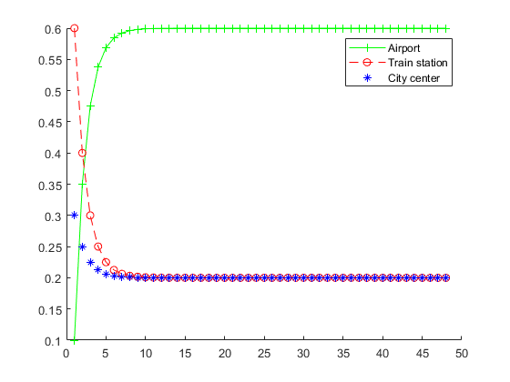
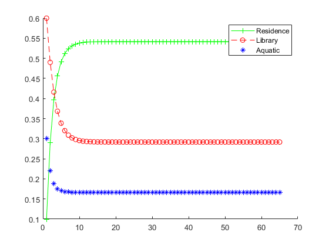

Contents
Q1
P = [ 8/10 3/10 3/10; 1/10 6/10 1/10; 1/10 1/10 6/10 ];
[V, D] = eig(P);
eigenvalues = diag(D);
precision = 10^(-10);
rounded_eigenvalues = round(eigenvalues / precision) * precision;
unique_eig = unique(rounded_eigenvalues);
occurances = {};
for i=1:size(unique_eig)
aRow = {unique_eig(i), 0};
occurances = [occurances; aRow];
end
occurances = cell2mat(occurances);
for i=1:size(eigenvalues)
index = find(unique_eig == rounded_eigenvalues(i));
occurances(index, 2) = occurances(index, 2) + 1;
end
identity = eye(size(P));
for i= 1:size(unique_eig)
formula = P - unique_eig(i)*identity;
nullity = size(P, 1) - rank(formula);
occurances(i, 3) = nullity;
end
for i=1:size(unique_eig)
disp(["eig: " + occurances(i,1)])
disp("algebraic multiplicity")
disp(occurances(i,2));
disp("geometric multiplicity")
disp(occurances(i,3));
end
iminusp = identity - P;
iminuspRREF = rref(iminusp);
nullSpace = iminuspRREF(:,3)*-1 + [0; 0; 1];
t = 1 / sum(nullSpace);
steady_vector = t*nullSpace;
disp('steady_vect:')
disp(steady_vector)
eig: 0.5
algebraic multiplicity
2
geometric multiplicity
2
eig: 1
algebraic multiplicity
1
geometric multiplicity
1
steady_vect:
0.6000
0.2000
0.2000
Q2
x0=[0.1;0.6;0.3];
P=[0.8 0.3 0.3;
0.1 0.6 0.1;
0.1 0.1 0.6];
v1=[];
v2=[];
v3=[];
v1=[v1 x0(1)];
v2=[v2 x0(2)];
v3=[v3 x0(3)];
powersofD = V*D*inv(V);
for i=1:500
x1=(powersofD^i)*x0;
if (x1-powersofD*x1)<1e-15
disp('Steady state found')
break;
end
v1=[v1 x1(1)];
v2=[v2 x1(2)];
v3=[v3 x1(3)];
end
figure(1)
hold on
plot(v1,'g+-')
plot(v2,'ro--')
plot(v3,'b*')
legend('Airport','Train station','City center')
Steady state found

Q3
PQ3 = [0.8, 0.1, 0.1; 0.2, 0.7, 0.1; 0.3, 0.2, 0.5];
PQ3 = transpose(PQ3);
[VQ3, DQ3] = eig(PQ3);
eigenvaluesQ3 = diag(DQ3);
unique_eigQ3 = unique(eigenvaluesQ3);
occurancesQ3 = {};
for i=1:size(unique_eigQ3)
aRow = {unique_eigQ3(i), 0};
occurancesQ3 = [occurancesQ3; aRow];
end
occurancesQ3 = cell2mat(occurancesQ3);
for i=1:size(eigenvaluesQ3)
index = find(unique_eigQ3 == eigenvaluesQ3(i));
occurancesQ3(index, 2) = occurancesQ3(index, 2) + 1;
end
identity = eye(size(PQ3));
for i= 1:size(unique_eigQ3)
formulaQ3 = PQ3 - unique_eigQ3(i)*identity;
nullityQ3 = size(PQ3, 1) - rank(formulaQ3);
occurancesQ3(i, 3) = nullityQ3;
end
for i=1:size(unique_eigQ3)
disp(["eig: " + occurancesQ3(i,1)])
disp("algebraic multiplicity")
disp(occurancesQ3(i,2));
disp("geometric multiplicity")
disp(occurancesQ3(i,3));
end
iminuspQ3 = identity - PQ3;
iminuspRREFQ3 = rref(iminuspQ3);
nullSpaceQ3 = iminuspRREFQ3(:,3)*-1 + [0; 0; 1];
t = 1 / sum(nullSpaceQ3);
steady_vector = t*nullSpaceQ3;
disp('steady_vect:')
disp(steady_vector)
x0=[0.1;0.6;0.3];
v1=[];
v2=[];
v3=[];
v1=[v1 x0(1)];
v2=[v2 x0(2)];
v3=[v3 x0(3)];
for i=1:500
x1 = PQ3^i*x0;
if (x1-PQ3^i*x1)<1e-15
disp('Steady state found')
break;
end
v1=[v1 x1(1)];
v2=[v2 x1(2)];
v3=[v3 x1(3)];
end
figure(3)
hold on
plot(v1,'g+-')
plot(v2,'ro--')
plot(v3,'b*')
legend('Residence','Library','Aquatic')
eig: 0.4
algebraic multiplicity
1
geometric multiplicity
1
eig: 0.6
algebraic multiplicity
1
geometric multiplicity
1
eig: 1
algebraic multiplicity
1
geometric multiplicity
1
steady_vect:
0.5417
0.2917
0.1667
Steady state found
